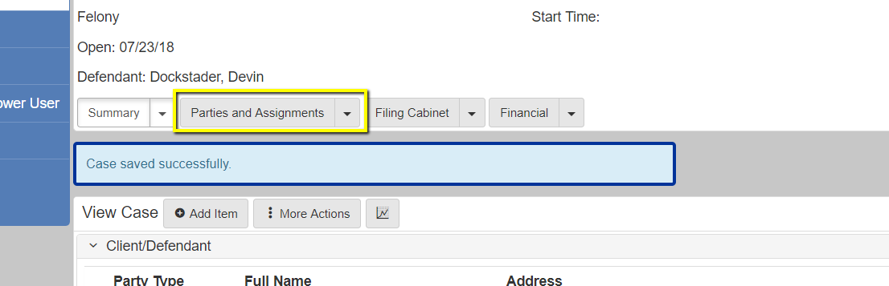
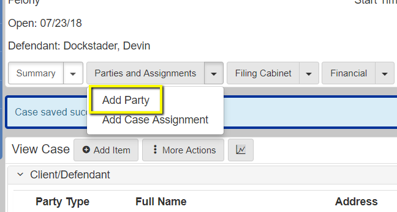
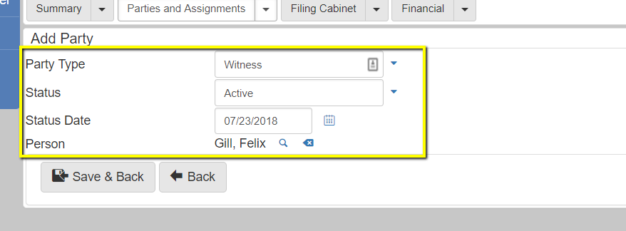
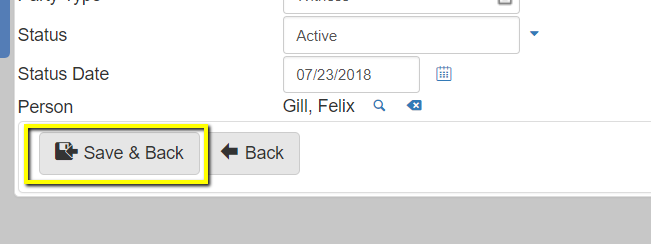
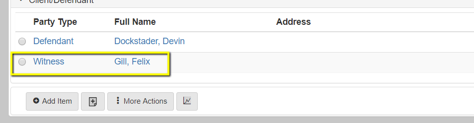
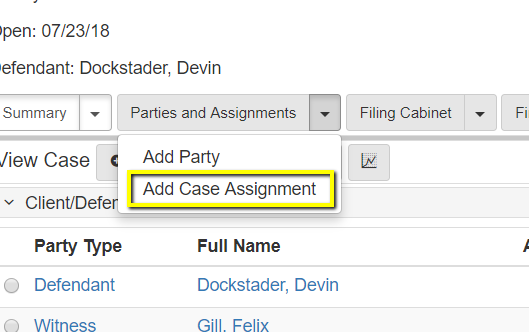
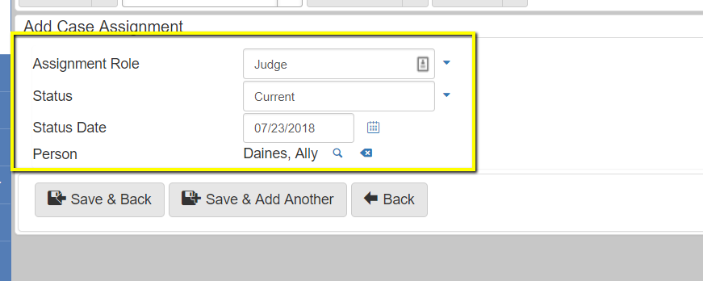
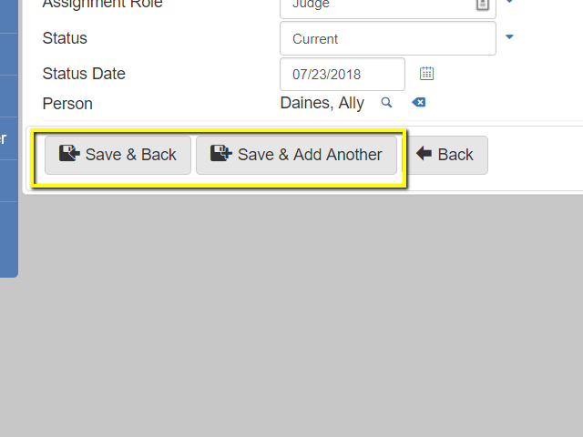
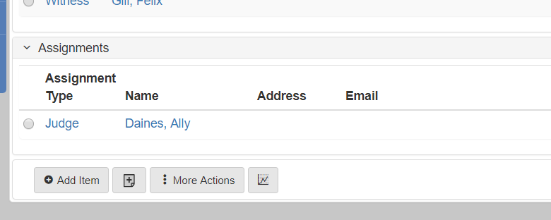

How Parties and Case Assignments relate to a case, and how to add them both
Parties and case assignments are two seperate entities/tables in eCourt. Parties are people that directly were involved iwth a case. Such as witnesses, victims, police officers, and defendants/clients. Case assignments are people that are assigned to the case after the incident. Such as public defenders, private attornies, prosecutors, judges, etc. Most environments keep these seperate with a parties and case assignments tab.
On the primary case navigation find the drop down of parties/people
Select the add party option (this may also be seperated out into add defendant, add witness, etc.
fill out the necessary information Required info is marked by : *
Select one of the save buttons at the bottom of the form.
The party should then be on the case
Open a case, and find the drop down for case/people
Select the add case assignment option (this may be seperated into judge, attorney, etc.)
Fill out the necessary information. Required info is marked by : *
Select one of the save buttons at the bottom of the form
The Assignment should then be on the case
